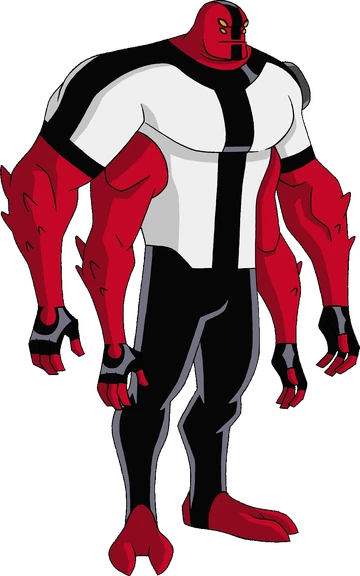

Quatro Braços é talvez o alien mais icônico de Ben 10, sendo conhecido pela sua força extraordinária. Possuindo 4 braços extremamente fortes, 4 olhos e uma pele vermelha raivosa, cuidado!
Com um poder excessivo, levanta gigantescos objetos e seus socos nocauteiam qualquer um. Apesar disso, é um alien lento.
Espécie: Tetramando
Planeta de Origem: Khoros
Curiosidade:
Seus quatro braços o fornecem uma incrível capacidade cognitiva, masmo lentos em velocidade, é bem ágil.
